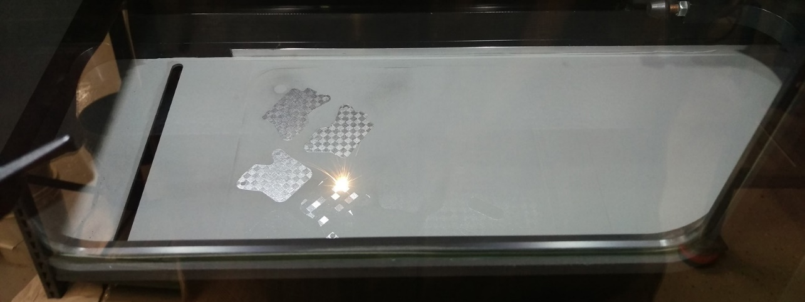

Material 3D 3DMT specializes in
metal additive manufacturing and the key component of
the technology is material. With a long history of
powder metallurgy in ARC Group, this experience transfers to 3DMT
with metallurgists on staff, on-site material testing capabilities
and heat treatment knowledge.
Metals:
Aluminum –
Alsi10Mg, Alsi12Mg,
Titanium – Ti64 (Grade 5)
Stainless Steel
– 17-4PH, 15-5PH, GP1, PH1
Maraging Steel – M-300, MS1
Inconel
– 625, 718
Cobalt Chrome
Plastic:
ABS – M30, ABSi
(translucent)
Nylon
Polycarbonate
3D metal printing is
an advanced, next-generation additive manufacturing process for
making complex parts with features that cannot be produced by any
other method. Parts are created on a special machine layer-by-layer,
and this unique process lets you – the product designer – add
internal features like conformal cooling channels and lattice
structures reduce weight while preserving strength. Because the
process is completely computer controlled, you are also able to
modify features quickly and easily without additional expense,
allowing you to test different versions of a prototype fast.
Prototypes can be made in stainless steel, aluminum and
titanium.
When combined with our CNC machining and finishing
services, we have everything you need to create sophisticated
prototypes for applications in medical, automotive, aerospace and
other demanding industries.
3D metal printing is an advanced,
generation additive manufacturing process for making complex parts
with features that cannot be produced by any other method. Parts are
created on a special machine layer-by-layer, and this unique process
lets you – the product designer – add internal features cooling
channels and lattice structures to reduce weight while preserving
strength. Because the process is completely computer controlled, you
are also able to modify features quickly and easily without
additional expense, allowing you to test different versions of a
prototype fast. Prototypes can be made in stainless steel, aluminum
and titanium.
PCB (Printed Circuit Board)
PCB (Printed Circuit Board) is a
thin board where the electronic components, which are in pairs and
assemblies, where the sides are made of copper lining to solder the
legs of the components. PCB can be more than 1 layer, which I know
maximum up to 12 layer.PCB is made of fiber material or the like on
the non conductive part. The thickness of copper on PCB is various,
there are 35 micrometer there is also 17-18
micrometer
Other PCB materials are phenolic or pertinax paper, usually brown, this type of material is more popular because of its cheaper price.For PCB in use for Through hole plating, usually wearing a fiberglass, because the fungus does not like this material, and The material is stronger and not easy to bend in comparison with pertinax.PCB can be found in almost all electronic equipment, such as radio, mobile, television, and others.